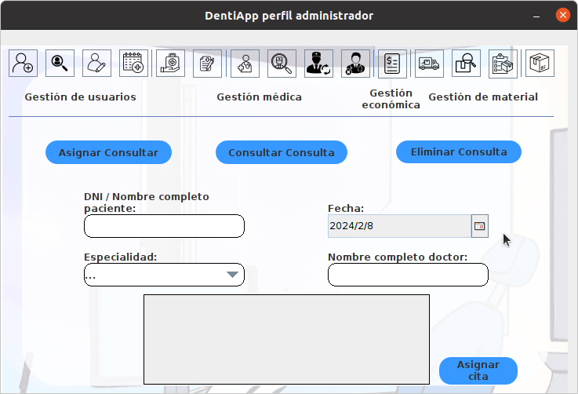

En este apartado asignaremos consultas a los pacientes de la empresa, necesitaremos rellenar los siguientes campos del
formulario:

- DNI / Nombre completo paciente: Donde introduciremos el DNI o el nombre completo del paciente
- Fecha: Donde seleccionaremos la fecha de la consulta posterior al dia actual
- Especialidad: Donde seleccionaremos la especialidad del doctor que quieren asignarle la cita
- Nombre completo doctor: Donde opcionalmente introduciremos el nombre completo del doctor que quieren asignarle la cita
Una vez hemos introducido los datos del formulario, seleccionamos en la tabla la fila con el doctor y la fecha de la cita,
y pulsamos en el boton asignar cita para establecer la consulta a un paciente.